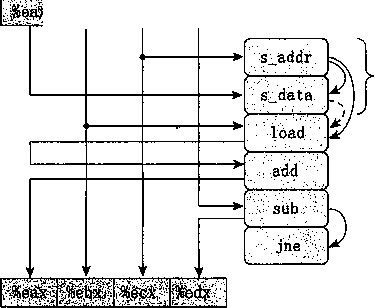
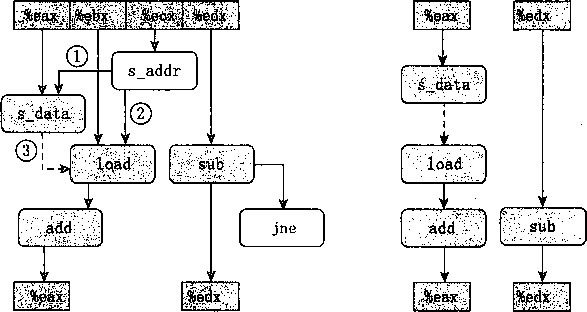
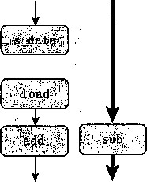

|
2 |
void clear_array_4(int *dest,: |
|
|
3 |
int |
i； |
|
4 |
int |
limit = n-3; |
|
5 |
for |
(i 二 0; i < limit; i+= |
|
6 |
dest [i] = 0; |
|
|
7 |
r dest[i+1] = 0; |
|
|
8 |
dest[i+2] = 0; |
|
|
9 |
dest[i+3] = 0; |
|
|
10 |
> |
|
|
11 |
for |
(;i < limit; i++) |
|
12 |
dest [i] = 0; |
|
|
13 |
> |
|
n) {
图5-32将数组元素设置为0的函数。它们说明了存储操作的流水线化 在图5-33的示例B中，参数src和dest都是指向数组元素a[0]的指针。在这种情况
AWritetodest, readfromsrc*/
voidwrite_read(int*src, int*dest, intn)
{
intcnt=n;
intval=0;
while(cnt—) { *dest=val; val=(*src)+l;
7
9
10
11
示例 A: write_read(&a[0], &a[l], 3)
cnt
val
Initial 3 |
Iter. 1 2 |
Iter. 2 1 |
Iter., 3 0 |
||||
-10 |
17 |
-10 |
0 |
-10 |
-9 |
-10 |
-9 |
0 |
^ : -9 „ |
一 9 |
, - 9 |
||||
示例 B: write_read(&a[0], &a[0], 3)
cnt
val
Initial 3 |
Iter. 1 2 |
Iter. 2 1 |
Iter. 3 0 |
||||
-10 |
17 |
0 |
17 |
! 1 |
17 |
2 |
17 |
/ 0 |
1 |
2 |
3 |
||||
图5-33写和读存储器位置的代码，以及示例执行。这个函数强调的是当参数src和dest 相等时，存储和加载之间的相互影响
中，指针引用*src的每次加载都会得到指针引用*dest的前次执行存储的值。因而，一系列 不断增加的值会被存储在这个位置。通常，如果调用函数write一read时参数src和dest指 向同一个存储器位置,而参数cnt的值为w>0,那么净效果是将个位置设置为《-1。这个示
例说明了一个现象，我们称之为写/ 读相关 （write/read dependency) 个存储器读的结果依
赖于一个最近的存储器写。我们的性能测试表明示例B的CPE为6.00。写/读相关导致处理 速度的下降。
为了了解处理器如何区别这两种情况，以及为什么一种情况比另一种运行得慢，我们必须更 加仔细地看看加载和存储执行单元,如图5-34所示。存储单元包含一个 存储缓冲区， 它包含已 经被发射到存储单元而又还没有完成的存储操作的地址和数据，这里的完成包括更新数据高速缓 存。提供这样一个缓冲区，使得一系列存储操作不必等待每个操作都更新高速缓存就_够执行。 当一条加载操作发生时，它必须检查存储缓冲区中的条目，看有没有地址相匹配。如果有地址相 匹配（意味着在写的字节与在读的字节有相同的地址)，它就取出相应的数据条目作为加载操作 的结果。
加载单元 |
存储单元 |
||||||||
存储缓冲区 |
|||||||||
地址 |
数据 |
||||||||
地址 |
机器地址4 |
||||||||
数据 |
1 |
||||||||
地址 |
k 数据 |
地址 |
f 数据 |
||||||
数据缓存 |
|||||||||
图5-34加载和存储单元的细节。存储单元包含一个未执行的写的缓冲区。加载单元必须检 査它的地址是否与存储单元中的地址相符，以发现写/读相关
图5-35给出了 write_read内循环的汇编代码，以及指令译码器产生的操作的图形化表 示。指令movl %eax, (%ecx)被翻译成两个操作.:s_addr指令计算存储操作的地址，在存储 缓冲区创建一个条目，并且设置该条目的地址字段。s一data操作设置该条目的数据字段。正如 我们会看到的，两个计算是独立执行的，这对程序的性能来说很重要。
除了由于写和读寄存器造成的操作之间的数据相关，操作符右边的弧线表示这些操作隐 含的相关。特别地，s_addr操作的地址计算必须在 3 _0^七3操作之前。此外，对指令movl (%ebx) , %eax译码得到的load操作必须检査所有未完成的存储操作的地址，在这个操作和 s_addr操作之间形成了数据相关。这张图$s_data和load操作之间有虚弧线。这个数据相 ^是有条件的：如果两个地址相同，load操作&、须等待直到 s _data将它的结果存放到存储缓 冲区中，但是如果两个地址不同，两个操作就可以独立地进行。
图5-36更清晰地说明了 write一read内循环操作之间的数据相关。在图5-36a中，重新排 列了操作，让相关显得更清楚。我们标出了三个涉及加载和存储操作的相关，希望引起大家特别 的重视。标号为（1)的弧线表示存储地址必须在数据被存储之前计算出来。标号为（2)的弧 线表示需要load操作将它的地址与所有未完成的存储操作的地址进行比较。最后，标号为（3) 的虚弧线表示条件数据相关，当加载和存储地址相同时会出现。
ES1S55

movl %eax, (%ecx)
movl (%ebx), %eax addl $1, %eax subl $1, %edx jne loop
图5-35 writejead内循环代码的图形化表示。第一个movl指令被译码两个独立的操 作，计算存储地址和将数据存储到存储器

a ) b )
图5-36抽象write_ rea d的操作。我们首先重新排列图5-35的操作（a),然后只显 示那些使用一次迭代中的值在下一次迭代中产生新值的操作（b)
图5-36b说明了当移走那些不直接影响迭代与迭代之间数据流的操作之后，会发生什么。这 个数据流图给出两个相关链：左边的一条,存储、加载和增加数据值（只对地址相同的情况有 效）;右边的一条，减小变量cnt。
现在我们可以理解函数write一read的性能特征了。图5-37说明的是内循环的多次迭代形 成的数据相关。对于图5-33示例A的情况，有不同的源和目的地址，加载和存储操作可以独立 地进行，因此唯一的关键路径是由减少变量cnt形成的。这使得我们会预测CPE等于1.00,而 不是测量到的CPE 2.00。对于任何在一个循环内既存储又加载数据的函数来说，我们都发现了 类似的行为。显然，比较加载地址和未完成存储操作的地址形成了额外的瓶颈。对于图5-33示 例B的情况，源地址和目的地址相同，s_data和load指令之间的数据相关使得关键路径的形 成包括了存储、加载和增加数据。我们发现顺序执行这三个操作一共需要6个时钟周期。
这两个例子说明，存储器操作的实现包括许多细微之处。对于寄存器操作，在指令被译码成 操作的时候，处理器就可以确定哪些指令会影响其他哪些指令。另一方面，对于存储器操作，只 有到计算出加载和存储的地址被计算出来以后，处理器才能确定哪些指令会影响其他的哪些。高 效地处理存储器操作对许多程序的性能来说至关重要。存储器子系统使用了很多优化，例如当操
作可以独立地进行时潜在的并行性。
示例A 示例B
关键路径 关键路径
：Ldat^
^ ^ ^ *
f^s^^i. . ■-dh-. ca *kr 110- ♦
I
t 寧
IX~
-；cpsi
%：^iA
丨 ||:紙
i-t-

HuT
V' ‘
# ata 。
::
jr
★纖:
图 5-37 函数 write—read 的数据流表示。当两个地址不同时，唯一的关键路径是减少 cnt 形成的（示例A)。当两个地址相同时，存储、加载和增加数据的链形成了关键路径 (示例B)
_练习题5.10以下是另一个具有潜在的加载一存储相互影响的代码，考虑下面的函数，它将一个数组 的内容复制到另一个数组：
void copy_array(int *src, int *dest, int n)
{
int i;
for (i : 0; i < n; i++)
dest [i] = src [i];
}
假设a是一个长度为1000的数组，它被初始化为每个元素a⑴等于/。
调用 copy_array (a+1, a, 999) 的效果是什么？
调用 copy一array (a, a+1, 999) 的效果是什么?
我们的性能测试表明问题A调用的CPE为2.00,而问题B调用的CPE为5.00。你认为是什么因素
造成了这样的性能差异？
D •你预计调用 copy_array (a,a, 999) 的性能会是怎样的？.
®练习题5.11我们测量出前置和函数 psuml (图 5-1) 的 CPE 为 10.00, 在测试机器上，要执行的基 本操作，浮点加法的延迟只是3个时钟周期。试着理解为什么我们的函数执行效果这么差。
下面是这个函数内循环的汇编代码：
|
psuml . a |
in %rdi, p in %rsi, i in °/,rax, |
cnt in %rdx |
|
.L5: |
loop ： |
|
|
movss |
-4(%rsi,%rax,4), %xmm0 |
Get p[i-l] |
|
addss |
(%rdi,%rax ， 4), %xmm0 |
Add n[i] |
|
movss |
%xmm0, (%rsi,%rax,4) |
.Store at p[i] |
|
addq |
$1, %rax |
Increment i |
|
cmpq |
%rax, %rdx |
Compare cnt:i |
|
jg |
.L5 |
If >, got.o loop |
参考对combine3 (图5-14)和write_read (图5-36)的分析，画出这个循环生成的数据相关 图，再画出计算进行时由此形成的关键路径。
解释为什么CPE如此之高。（你可能无法证明CPE为什么正好是这个值，但是你应该能够讲述为 什么它运行得比预期的慢。）
®练习题5.12重写psrnnl (图5-1)的代码，使之不需要反复地从存储器中读取p [i]的值。不需要 使用循环展开。得到的代码测试出的CPE等于3.00,受浮点加法延迟的限制。
5.13 应用：性能提高技术
虽然只考虑了有限的一组应用程序，但是我们能得出关于如何编写高效代码的很重要的经验 教训。我们已经描述了许多优化程序性能的基本策略：
高级设计。为遇到的问题选择适当的算法和数据结构。要特别警觉，避免使用那些会渐 进地产生糟糕性能的算法或编码技术。
基本编码原则。避免限制优化的因素，这样编译器就能产生高效的代码。
•消除连续的函数调用。在可能时，将计算移到循环外。考虑有选择地妥协程序的模块性以 获得更大的效率。
•消除不必要的存储器引用。引入搞时变量来保存中间结果。只有在最后的值计算出来时, 才将结果存放到数组或全局变量中。
低级优化。
•展开循环，降低幵销，并且使得进一步的优化成为可能。
•通过使用例如多个累积变量和重新结合等技术，找到方法提高指令级并行。
•用功能的风格重写条件操作，使得编译釆用条件数据传送。
最后要给读者一个忠告，要警惕，在为了提高效率重写程序时避免引入错误。在引入新变 量、改变循环边界和使得代码整体上更复杂財，很容易犯错误。一项有用的技术是在优化函数 时，用检查代码来测试函数的每个版本，以确保在这个过程没有引入错误。检査代码对函数的新 版本实施一系列的测试，确保它们产生与原来一样的结果。对于髙度优化的代码，这组测试情况 必须变得更加广泛，因为要考虑的情况也会更多。.例如，使用循环展开的检查代码需要测试许多 不同的循环界限，保证它能够处理最终单步迭代所霞要的所有不同的可能的数字。
5.14 确认和消除性能瓶颈
至此，我们只考虑了优化小的程序，在这样的小程序中有一些很明显限制性能的地方，因此 应该集中注意力对它们进行优化。在处理大程序时，连知道应该优化什么地方都是很难的。本节 会描述如何使用代码剖析程序（code profiler),这是在程序执行时收集性能数据的分析工具。我 们还展示了一个系统优化的通用原则，称为Amdahl定律（Amdahl’s law)。
5.14.1 程序剖析
程序剖析（profiling)包括运行程序的一个版本，其中插入了工具代码，以确定程序的各个 部分需要多少，时间。这对于程序中确认我们需要集中注意力优化的部分是很有用的。剖析的一个 有力之处在于可以在现实的基准数据(benchmark data)上运行实fc程序的同时，进行剖析。
Unix系统提供了一个剖析程序GPROF。这个程序产生两种#式的信息。首先，它确定程序 中每个函数花费了多少CPU时间。其次，它计算每个函数被调用的次数，以执行调用的函数来 分类。这两种形式的信息都非常有用。这些计时给出了不同函数在确定整体运行时间中的相对重 要性。调用信息使得我们理解程序的动态行为。
用GPROF进行剖析需要3个步骤，就像C程序prog, c所示，它运行时命令行参数为 file . txt ：
程序必须为剖析而编译和链接。使用GCC (以及其他C编译器)，就是在命令行上简单 地包括运行时标志 f -pg’ ：
unix> gcc -01 -pg prog.c 一 o prog
然后程序像往常一样执行：
unix> ./prog file.txt
它运行得会比正常时稍微慢一点（大约慢2倍)，不过除此之外唯一的区别就是它产生了一 个文件gmon • out。
调用GPROF来分析gmon • out中的数据。
unix> gprof prog
剖析报告的第一部分列出了执行各个函数花费的时间，按照降序排列。作为一个示例，下面 列出了报告的一部分，关于程序中最耗费时间的三个函数：
|
% ( |
cumulative |
self |
self |
total |
||
|
time |
seconds |
seconds |
calls |
s/call |
s/call |
name |
|
97.58 |
173.05 |
173.05 |
1 |
173.05 |
173.05 |
sort_words |
|
2.36 |
177.24 |
4.19 |
965027 |
0.00 |
0.00 |
find_ele_rec |
|
0.12 |
177.46 |
0.22 |
12511031 |
0.00 |
0.00 |
Strlen |
每一行代表对某个函数的所有调用所花费的时间。第一列表明花费在这个函数上的时间占整 个时间的百分比。第二列显示的是直到这一行并包括这一行的函数所花费的累计时间。第三列显 示的是花费在这个函数上的时间。而第四列显示的是它被调用的次数（递归调用不计算在内）。 在例子中，函数sort_word S 只被调用了一次，但就是这一次调用需要173.05秒，而函数 过1^^16一“0被调用了965 027次（递归调用不计算在内），总共需要4.19秒。函数Strlen 通过^用^函数strlen来计算字符串的长度。GPROF的结果中通常不显示库函数调用。库 函数耗费的时间通常计算在调用它们的函数内。通过创建这个“包装函数”（wrapper fimction) Strlen,我们可以可靠地跟踪对strlen的调用，表明它被调用了 12 511 031次，但是一共只 需要0.22秒。
剖析报告的第二部分是函数的调用历史。下面是一个递归函数find_ele一rec的历史：
158655725 find_ele_rec [5]
.19 • 19 .01 .00
0.02 965027/965027 insert—string [4]
[5：
0.02 965027+158655725 find_ele__rec [5]
0.01 363039/363039 new_ele [10]
0.01 363039/363039 save.string [13]
158655725 find.ele rec [5]
这个历史既显示了调用find_ele_r eC 的函数，也显示了它调用的函数。头两行显示的是对这 个函数的调用：被它自身递归地调用了 158 655 725次，被函数insert—string调用了 965 027 次（它本身被调用了 965 027次)。函数find_ele_rec也调用了另外两个函数save_string和 new_ele,每个函数总共被调用了 363 039次。
^据这个调用信息，我们通常可以推断出关于程序行为的有用信息。例如，函数find_ ele_rec是一个递归过程，它扫描一个哈系桶（hash bucket)的链表，查找一个特殊的字符串。 对于这个函数，比较递归调用的数量和顶层调用的数量，提供了关于遍历这些链表的长度的统计 信息。这里递归与顶层调用的比率是164.4,我们可以推断出程序每次平均大约扫描164个元素。
GPROF有些属性值得注意：
•计时 不是很准确。它的计时基于一个简单的间 隔计数 （interval counting)机制，编译过的 程序为每个函数维护一个计数器，记录花费在执行该函数上的时间。操作系统使得每隔某 个规则的时间间隔A程序被中断一次。5的典型值的范围为1.0〜10.0毫秒。当中断发生 时，它会确定程序正在执行什么函数，并将该函数的计数器值增加S。当然，也可能这个 函数只是刚开始执行，而很快就会完成，却赋给它从上次中断以来整个的执行开销。在两 次中断之间也可能运行其他某个程序，却因此根本没有计算花费。
对于运行时间较长的程序，这种机制工作得相当好。从统计上来说，应该根据花费在执行函 数上的相对时间来计算每个函数的花费。不过，对于那些运行时间少于1秒的程序来说，得到的 统计数字只能看成是粗略的估计值。
。调用信息相当可靠。编译过的程序为每对调用者和被调用者维护一个计数器。每次调用一 个过程时，就会对适当的计数器加1。
•默认情况下，不会显示对库函数的调用。相反地，库函数的时间都被计算到调用它们的函 数的时间中。
5.14.2使用剖析程序来指导优化
作为一个用剖析程序来指导程序优化的示例，我们创建了一个包括几个不同任务和数据结构 的应用。这个应用分析一个文本文档的 n-gram 统计信息，这里 n-gram 是一个出现在文档中《个 单词的序列。对于《=1，收集每个单词的统计信息，对于《=2,收集每对单词的统计信息，以此 类推。对于一个给定的《值，程序读一个文本文件，创建一张互不相同的的表，指出每 ^n-gram 出现了多少次，然后按照出现次数的降序对单词排序。
作为基准程序，我们在一个由《莎士比亚全集》组成的文件上运行这个程序，一共有965 028 个单词，其中23 706个是互不相同的。我们发现，对于《=1，即使是一个写得很烂的分析程序 也能在1秒以内处理完整个文件，所以我们设置《=2,使得事情更加有挑战。对于《=2的情况， n-gmm被称为bigram (读作“bye-gmm”)。我们确定《莎士比亚全集》包含363 039个互不相同 的 bigmm。 最常见的是“I am”，出现了 1 892次。词组“to be”出现了 1 020次。 bigram 中有 266 018个只出现了一次。
程序是由下列部分组成的。我们创建了多个版本，从各部分简单的算法开始，然后再换成更 成熟完善的算法：
1)从文件中读出每个单词，并转换成小写字母。最初的版本使用的是函数lowerl
(见图5-7),我们知道由于反复地调用strlen,它的时间复杂度是二次的。
对字符串应用一个哈希函数，为一个有^个桶（bucket)的哈希表产生一个0〜^-1之 间的数。最初的函数只是简单地对字符的ASCII代码求和，再对s求模。
每个哈希桶都组织成一个链表。程序沿着这个链表扫描，寻找一个匹配的条目。如果找 到了，这个的频度就加1。否则，就创建一个新的链表元素。最初的版本递归地完成这 个操作，将新元素插在链表尾部。
一旦已经生成了这张表，我们就根据频度对所有的元素排序。最初的版本使用插入排序。 图5-38是 n-gram 频度分析程序6个不同版本的剖析结果。对于每个版本，我们将时间分为
下面的5类：
Sort ：按照频度对 n-gram 进行排序
List:为匹配扫描链表，如果需要，插入一个新的元素
Lower ：将字符串转换为小写字母
Strlen ：计算字符串的长度
Hash ：计算哈希函数
Rest ：其他所有函数的和 ’
::, A I - 1 — '. - J |
||
Sort d List I Lower I Strlen I Hash ■ Rest
Initial Quicksort Iter first Iter last Big table Better hash Linear lower
a )所有的版本
200 180 160 140
营 120 &100 80 60 40 20
0
5 4 3 2 1
E|| |
m pi |
|||||||
纖 |
S_ |
__ |
||||||
SB# 離S |
麵擊 織藥 |
_ _ |
||||||
mmi 譲 |
m |
議 _ |
||||||
11 |
BS9ES |
|||||||
E3 Sort M List H Lower H Strlen U Hash ■ Rest
Quicksort Iter first Iter last Big table Better hash Linear lower b )除了最慢的版本以外的所有版本 9 5-38 频度计数程序的各个版本的剖析结果。时间是根据程序中不同的主要操作划分的
如图5-38a所示，最初的版本需要3分钟，大多数时间花在了排序上。这并不奇怪，因为插
入排序有二次的运行时间，而程序对363 039个值进行排序。
在下一个版本中，我们用库函数qsort进行排序，这个函数是基于快速排序算法的，运行 时间为0(«log«)。在图中这个版本称为“Quicksort”。更有效的排序算法使花在排序上的时间降 低到可以忽略不计，而整个运行时间降低到大约4.7秒。图5-38b是剩下各个版本的时间，所用 的比例使我们能看得更清楚。
改进了排序，现在发现链表扫描变成了瓶颈。想想这个低效率是由于函数的递归结构引起 的，我们用一个迭代的结构替换它，显示为“Iter first”。令人奇怪的是，运行时间增加到了大约 5.9秒。根据更近一步的研究，我们发现两个链表函数之间有一个细微的差别。递归版本将新元 素插入到链表尾部，而迭代版本把它们插到链表头部。为了使性能最大化，我们希望频率最高 的〜出现在链表的开始处。这样一来，函数就能快速地定位常见的情况。假设在 文档中是均勻分布的，我们期望频度高的单词的第一次出现在频度低的单词之前。通过将新的 插入尾部，第一个函数倾向于按照频度的降序排序，而第二个函数则相反。因此我们创 建第三个链表扫描函数，它使用迭代，但是将新元素插人到链表的尾部。使用这个版本，显示为 “Iter last”，时间降到了大约4.2秒，比递归版本稍微好一点。这些测量说明了对程序做实验作为 优化工作一部分的重要性。开始时，我们假设将递归代码转换成迭代代码会改进程序的性能，而 没有考虑添加元素到链表末尾和开头的差别。
接下来，我们考虑哈希表的结构。最初的版本只有1021个桶（通常会选择桶的个数为质数, 以增强哈希函数将关键字均勻分布在桶中的能力）。对于一个有363 039个条目的表来说，这就 意味着平均负载（load)是363039/1021=355.6。这就解释了为什么有那么多时间花在了执行链 表操作上了——搜索包括测试大量的候选 Rgram 。它还解释了为什么性能对链表的排序这么敏 感。然后，我们将桶的数量增加到了 199 999，平均负载降低到了 1.8。不过，很奇怪的是，整体 运行时间只下降到3.9秒，差距只有0.3秒。
进一步观察，我们可以看到，表变大了但是性能提高很小，这是由于哈希函数选择的不好。 简单地对字符串的字符编码求和不能产生一个大范围的值。特别是，一个字母最大的编码值是 122,因而w个字符产生的和最多是122w。在文档中，最长的bigram, “honorificabilitudinitatibus thou",的和也不过是3371,所以，哈希表中大多数桶都是不会被使用的。此外，可交换的哈希 函数，例如加法，不能对一个字符串中不同的可能的字符顺序做出区分。例如，单词“rat”和 “tar”会产生同样的和。
我们换成一个使用移位和异或操作的哈希函数。使用这个版本，显示为“Better Hash”，时 间下降到了 0.4秒。一个更加系统化的方法是更加仔细地研究关键字在桶中的分布，如果哈希函 数的输出分布是均勻的，那么确保这个分布接近于人们期望的那样。
最后，我们把运行时间降低了大部分时间花在strlen上，而大多数对strlen的调用是 作为小写字母转换的一部分。我们已经看到了函数lowerl有二次的性能，特别是对长字符串 来说。这篇文档中的单词足够短，能避免二次性能的灾难性的结果；最长的bigram只有32个字 符。不过换成使用lower2,显示为“Linear Lower”得到很好的性能，整 个时间 降到了 0.2秒。
这个练习说明，代码剖析有助于将一个简单应用程序所需的时间从将近3分钟降低到1秒以 下。剖析程序帮助我们把注意力集中在程序最耗时的部分上，同时还提供了关于过程调用结构的 有用信息。代码中的一些瓶颈，例如二次的排序函数，很容易看出来；而其他的，例如插入到链 表的开始还是结尾，只有通过仔细的分析才能看出。
我们可以看到，剖析是工具箱中一个很有用的工具，但是它不应该是唯一一个。计时测量不 是很准确，特别是对较短的运行时间（小于1秒）来说。更重要的是，结果只造用于被测试的那 些特殊的数据。例如，如果在由较少数量的较长字符串组成的数据上运行最初的函数，我们会发 现小写字母转换函数才是主要的性能瓶颈。更糟糕的是，如果它只剖析包含短单词的文档，我们 可能永远不会发现隐藏着的性能瓶颈，例如lowerl的二次性能。通常，假设在有代表性的数 据上运行程序，剖析能帮助我们对典型的情况进行优化，但是我们还应该确保对所有可能的情 况，程序都有相当的性能。这主要包括避免得到糟糕的渐近性能（asymptotic performance)的算 法（例如插入算法）和坏的编程实践（例如lowerl)。
Amdahl 定律
Gene Amdahl,计算领域的先驱之一，做出了一个关于提高系统一部分性能的效果的简单但 是富有洞察力的观察。这个观察现在被称为Amdahl 定律。 其主要思想是当我们加快系统一个 部分的速度时，对系统整体性能的影响依赖于这个部分有多重要和速度提高了多少。考虑一 个系统，在其中执行某个应用程序需要时间假设系统的某个部分需要这个时间的百分比 为而我们将它的性能提高到了 A倍。也就是，这个部分原来需要时间而现在需要时间 iaTJk。 因此，整个执行时间会是
K1 -a)T old ^{aT old )lk =T old [{\-a)+a/k]
据此，我们可以计算加速比庐TVH:
(1 — a) + a/k (5-4)
作为一个示例，考虑这样一种情况，系统原来占用60%时间（a=0.6)的部分被提高到了 3 倍03)。那么得到加速比1/[0.4+0.6/3]=1.67。因此，即使我们大幅度改进了系统的一个主要部 分，净加速比还是 很小。 这就是Amdahl定律的主要观点——要想大幅度提高整个系统的速度， 我们必须提高整个系统很大一部分的速度。
®练习题5.13 假设你的职业是卡车司机，你运送一车土豆从Idaho的Boise到Minnesota的 Minneapolis,总距离为2500公里。估计在速度限制以内你开车的平均时速为100公里，整个行程需 要25小时。
你在新闻里听说Montana刚刚取消了它的限速，这段路程有1500公里。你的卡车可以开到每小时 150公里。你这次行程的加速比会是多少？
你可以在www.fasttrucks.com为卡车购买一个新的涡轮增压器。它们有许多样式，不过想开得越快， 花费就越大。要想行程加速比达到5/3,你必须以多大的速度通过Montana?
_练习题5.14公司的市场部门许诺你的客户下一版软件性能会提高一倍。分配给你的任务是实现这个 承诺。你确定只能改进系统80%的部分。为了达到整体性能目标，你需要将这个部分提高到多少（也 就是，的值应为多少）？
Amdahl定律的一个有趣的特殊情况是考虑将々设为oo的效果。也就是，我们能够找出系统 的某个部分,把它的速度提高到时间可以忽略不计的程度。那么得到
5oo= (1^) (5-5)
因此，例如，如果我们能够将系统60%的部分速度提高到它所需要的时间接近于0,那么净加 速比也仍然只为1/0.4=2.5。当我们用快速排序取代插入排序时，从字典程序中就能看出这个性 能。最开始的版本花费它177.57秒中的173.05秒来进行插入排序，得到a = 0.975。使用快速排 序，花费在排序上的时间变得可以忽略不计，得到预测的加速比为39.3。实际上，实际测出的加 速比要小一点儿：173.05/4.72 = 37.6,这是由于剖析测试的不准确性造成的。我们能够获得大的 加速比，这是因为排序占到了整个执行时间的一个非常大的比例。
Amdahl定律描述了一个改进任何过程的通用原则。除了适用于提高计算机系统的速度之外, 它还能指导一个公司试着降低生产剃须刀片的成本，或是指导一个学生改进他的平均绩点。或许 它在计算机世界里最有意义，在计算机世界中，我们通常将性能提高一倍或更多。只有通过优化
系统很大的一部分才能获得这么高的提髙率。
5.15 小结
虽然关于代码优化的大多数论述都描述了编译器是如何能生成高效代码的，但是应用程序员 有很多方法来协助编译器完成这项任务。没有任何编译器能用一个好的算法或数据结构代替低效 率的算法或数据结构 ， 因此程序设计的这些方面仍然应该是程序员主要关心的。我们还看到妨碍 优化的因素，例如存储器别名使用和过程调用，严重限制了编译器执行大量优化的能力。同样, 程序员必须对消除这些妨碍优化的因素负主要的责任。这些应该被看作是好的编程习惯的一部 分，因为它们可以消除不必要的工作。
基本级别之外调整性能需要一些对处理器微体系结构的理解，描述处理器用来实现它的指令 集体系结构的底层机制。对于乱序处理器的情况，只需要知道一些关于操作、延迟和功能单元发 射时间的信息 ， 就能够基本地预测程序的性能了。
我们研寒了一系列技术，包括循环展开、创建多个累积变量和重新结合，它们可以利用现代处 理器提供的權令级并行。随着对优化的深入，研究产生出的汇编代码以及试着理解机器是如何执行 计算的变得重要起来。确认由程序中的数据相关决定的关键路径，收获良多。我们还可以根据必须 要计算的操作数量，以及执行这些操作的功能单元的数量和发射时间，计算一个计算的吞吐量界限。
包含条件分支或与存储器系统复杂交互的程序，比我们最开始考虑的简单循环程序，更难以分 析和优化。基本策略是使分支更容易预测，或者使它们很容易用条件数据传送来实现。我们还必须 注意存储和加载操作。将数值保存在局部变量中，使得它们可以存放在寄存器中，这会很有帮助。
当处理大型程序时，将注意力集中在最耗时的部分变得很重要。代码剖析程序和相关的工具 能帮助我们系统地评价和改进程序性能。我们描述了 GPROF, —个标准的Unix剖析工具。还有 更加复杂完善的剖析程序可用，例如Intel的VTUNE程序开发系统，和VALGRIND, Linux系 统基本上都有。这些工具可以在过程级分解执行 时间， 估计程序每个 基本块 （basic block)的性 能。（基本块是内部没有控制转移的指令序列，因此基本块总是整个被执行的。）
Amdahl定律提供了一个简单但是很有力的看法，通过只改进系统一部分获得性能收益。收 益既依赖于我们对这个部分的提高程度，也依赖于这个部分原来在整个时间中所占的比例。
参考文献说明
我们的关注点是从程序员的角度描述代码优化，展示如何使书写的代码，能够使编译器更容 易产生高效的代码p Chdlappa、Franchetti和Piischel的扩展的论文[19]采用了类似的方法，但 关于处理器的特性描述得更详细。
有许多著作从编译器的角度描述了代码优化，形式化描述了编辑器可以产生更有效代码的方 法。Muchnick的著作被认为是最全面的[76]。Wadleigh和Crawford的关于软件优化的著作[114] 覆盖了一些我们已经谈到的内容，不过它还描述了在并行机器上获得髙性能的过程。Mahlke等 人的一篇比较早期的论文[71],描述了几种为编译器开发的将程序映射到并行机器上的技术，它 们是如何能够被改造成利用现代处理器的指令级并行的。这篇论文覆盖了我们讲过的代码变换， 包括循环展开、多个累积变量（他们称之为 累积变量扩展 （accumulatQr variable expansion))和 重新结合（他们称之 为树高度减少 （tree height reduction))。
我们对乱序处理器的操作的描述相当简单和抽象。、可以在高级计算机体系结构教科书中找到 对通用原则更完整的描述，例如Hennessy和Patterson的著作[49,第2〜3章]。Shen和Lipasti 的书[96]提供了对现代处理器设计深人的处理。
大多数关于计算机体系结构的书都讲述了 Amdahl定律。Hennessy和Patterson的著作[49,
第1章]主要关心的是量化的系统评价，提供了对这个主题相当好的讲解。_，
家庭作业
**5.15假设我们想编写一个计算两个向量X和Y内积的过程。这个函数的一个抽象版本对整数、单精度和 双精度数据，在X86-64上CPE等于16〜17,在IA32上CPE等于26〜29。通过进行与我们将抽 象程序combinel变换为更有效的combine 4 相同类型的变换，得到如下代码：
/* Accumulate in temporary */
|
2 3 |
void inner4(vec_ptr x, vec_ptr y, data_t X |
|
4 |
\ long int i; |
|
5 |
int length = vec_length(x); |
|
6 |
data_t *xdata = get_vec_start (x); |
|
7 |
data_t *ydata = get_vec一start(y) ; |
|
8 o |
data_t sum = (data_t) 0; |
|
10 |
for (i = Q; i < length; i++) { |
i i sum = sum + xdata[i] * ydata[i];
12 >
|
13 |
♦dest = |
=sum |
|
14 : |
y |
测试显示对于整数和浮点数据，这个函t的CPE等于3.00。对于数据类型float,内循环的X86-64 汇编代码如下所示：
i.nner4: data„t float .
xdata in %rbx, ydata in °/»rax, limit in %rcx,
|
i in %rdx, |
sum in |
|||
|
i |
• L87: |
.loop: |
||
|
2 |
movss |
(%rbx,%rdx,4), |
%xmm0 |
Get xdata[i] |
|
3 |
mulss |
(%rax,%rdx,4), |
%xmm0 |
Multiply' by ydata[i] |
|
4 |
addss |
7oXmmO, %xmml |
Add to sum |
|
|
5 |
addq |
$1, %rdx |
Increment i |
|
|
6 |
cmpq |
%rcx, %rdx |
Compare i:limit |
|
|
7 |
jl |
.L87 |
If <, goto loop |
假设功能单元的特性如图 5 _1 2 所f。
按照图5-13和5.14的风格画出这个指令序列会如何被译码成操作，并给出它们之间的数据相 关如何形成一条操作的关键路径。
对于数据类型float,这条关键路径决定的CPE的下界是什么？
假设对于整数代码也有类似的指令序列，对于整数数据的关键路径决定的CPE的下界是什么？
请解释两个浮点版本的CPE怎么会都是3.00,即使乘法操作需要4或者5个时钟周期。
*5.16编写习题5.15中描述的内积过程的一个版本，使用3次循环展开 。•
对于X86-64,我们对这个展开的舨本的测試得到，对整数数据CPE为2.00, :而对单精度和双精度数 据CPE仍然为3.00。
解释为什么任何版本的内积过程都不能达到比2.00更小的CPE 了。
解释为什么对浮点数据的性能不会通过循环展开而得到提高。
*5.17编写习题5.15中描述的内积过程的一个版本，使用3次循环展开和3个并行累积变量。对于 X86-64,我们对这个函数的测试得到对所有类型的数据CPE都等于2.00。
什么因素制约了性能达到CPE等于2.00 ?
请解释为什么这个版本对于整数在IA32上CPE等于2.67,比只做4路循环展开时的CPE等于
2.33还要差。
*5.18编写习题5.15中描述的内积过程的一个版本，使用3次循环展开和重新结合以使得更高的并行度成 为可能。我们对这个函数的测试得到对所有类型的数据，在X86-64上CPE都等于2.00,在IA32上 CPE都等于2.33。
**5.19库函数memset的原型如下：
void *memset(void *s, int c, size^t n);
这个函数将从s开始的n个字节的存储器区域都填充为c的低位字节。例如，通过将参数c设置为 0,可以用这个函数来对一个存储器区域清零 ， 不过用其他值也是可以的。
下面是memset最直接的实现：
/氺 Basic implementation of memset */
void *basic_memset(void *s, int c, size_t n)
{
size_t cnt = 0;
unsigned char *schax = s;
while (cnt < n) {
*schar++ = (unsigned char) c;
cut++;
>
io return s;
n >
实现该函数一个更有效的版本，使用数据类型为unsigned long的字来装下4个（对于IA32) 或者8个（对于X86-64)个c,然后用字级的写遍历目标存储器区域。你可能发现增加额外的循环 展开会有所帮助。在Intel Core i7机器上 ， 我们能够把CPE从直接实现的2.00降低到对于IA32为 0.25,和对X86-64为0.125,每个周期写4个或者8个字节。
这里是一些额外的指导原则。在此，假设尤表示你运行程序的机器上的sizeof(unsigned long) 的值。
•你不可以调用任何库函数。
•你的代码应该对任意n的值都能工作 ， 包括当它不是A：的倍数的时候。你可以用类似于使用循环 展开时完成最后几次迭代的方法做到这一点。
•你写的代码应该做到无论[的值是多少 ， 都能够正确编译和运行。使用操作sizeof来做到这一点。 •在某些机器上，未对齐的写可能比对齐的写慢很多。（在某些非x86机器上 ， 未对齐的写甚至可能 会导致段错误。）写出这样的代码，开始时直到目的地址是[的倍数时，使用字节级的写，然后进 行字级的写，（如果需要）最后釆用用字节级的写。
•注意cnt足够小以至于一些循环上界变成负数的情况。对于涉及sizeof运算符的表达式，可以 用无符号运算来执行测试。（参见2.2.8节和家庭作业2.72。）
；；5.20在练习题5.5和5.6中我们考虑了多项式求值的任务，既有直接求值，也有用Homer方法求值。试 着用我们讲过的优化技术写出这个函数更快的版本，这些技术包括循环展开、并行累积和重新结合。 你会发现有很多不同的方法可以将Homer方法和直接求值与这些优化技术混合起来。
理想状况下，你能达到的CPE应该接近于你的机器上连续浮点加法和乘法之间的周期数（通常是 l)o至少，你应该能够达到一个小于你的机器的浮点加法延迟的CPE。
： 5.21在练习题5.12中，我们能够把前置和计算的CPE减少到3.00,这是由该机器上浮点加法的延迟决定 的。简单的循环展开没有改进什么。
使用循环展开和重新结合的组合，写出求前置和的代码 ， 能够得 . 到一个小于你机器上浮点加法延迟 的CPE。例如，我们使用2次循环展开的版本每次迭代需要3个加法 ， 而使用3次循环展开的版本
需要5个。
*5.22假设给了你一个任务，要提高一个由3个部分组成的程序的性能。部分A需要整个运行时间的 20%,部分B需要30%,而部分C需要50%。你确定1000美元能将部分B的速度提高到3.0倍， 也可以 将部分C的速度提高到1.5倍。哪种选择会使性能最大化？
练习题答案
练习题 5.1这个问题说明了存储器别名使用的某些细微的影响。
正如下面加了注释的代码所示，结果会是将xp处的值设置为0:
A *xp = *xp + *xp; /* 2x */
*xp = *xp - *xp; /* 2x~2x - 0 */
*xp = *xp - *xp; /木 0-0 = 0 */
这个示例说明我们关于程序行为的直觉往往会是错误的。我们自然地会认为X P 和yp是不同的情况， 却忽略了它们相等的可能性。错误通常源自程序员没想到的情况。
练习题 5.2这个问题说明了 CPE和绝对性能之间的关系。可以用初等代数解决这个问题。我们发现对于 «<2,版本1最快。对于3 <«<7,版本2最快，而对于《>8,版本3最快。
练习题 5.3这是个简单的练习，但是认识到一个for循环的4个语句（初始化、测试、更新和循环体） 执行的次数是不同的很重要。
代码 |
min |
max |
incr |
square |
A. |
1 |
91 |
90 |
90 |
B. |
91 |
1 |
90 |
90 |
C. |
1 |
1 |
90 |
90 |
练习题 5.4这段汇编代码展示了 GCC发现的一个很聪明的优化机会。要更好地理解代码优化的细微之 处，仔细研究这段代码是很值得的。
A.在没经过优化的代码中，寄存器％ X mmO简单地被用作临时值，每次循环迭代中都会设置和使用。 在经过更多优化的代码中，它被使用的方式更像combine4中的变量x,累积向量元素的乘积。不过，与 combine4的区别在于每次迭代第二条movss指令都会更新位置dest。
我们可以看到，这个优化过的版本运行起来很像下面的C代码：
/'* Make sure dest updated on each iteration */
void combine3w(vec_ptr v, data_t *dest)
long int i;
long int length. = vec_length(v); data_t *data = get_vec_start(v); data_t acc = IDENT;
for (i = 0; i < length; i++) { acc = acc OP data[i];
♦dest = acc;
>
3
4
5
6
7
8
9
13
combine3的两个版本有相同的功能，甚至于相同的存储器别名使用。
这个变换可以不改变程序的行为，因为除了第一次迭代，每次迭代开始时从dest读出的值和 前一次迭代最后写入到这个寄存器的值是相同的。因此，合并指令可以简单地使用在循环开始时就巳经 在％xmm0中的值。
练习题 5.5多项式求值是解决许多问题的核心技术。例如，多项式函数常常用作对数学库中三角函数求近 似值。